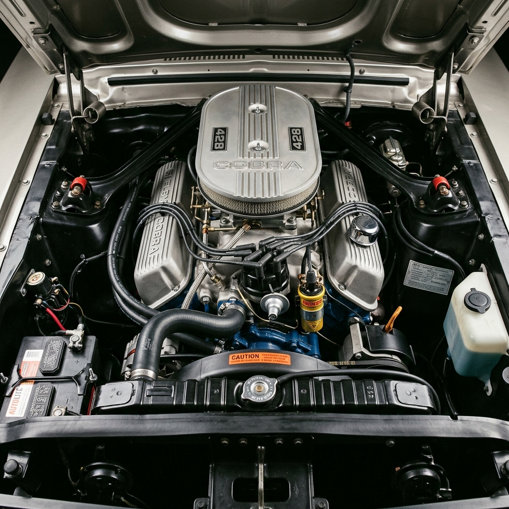
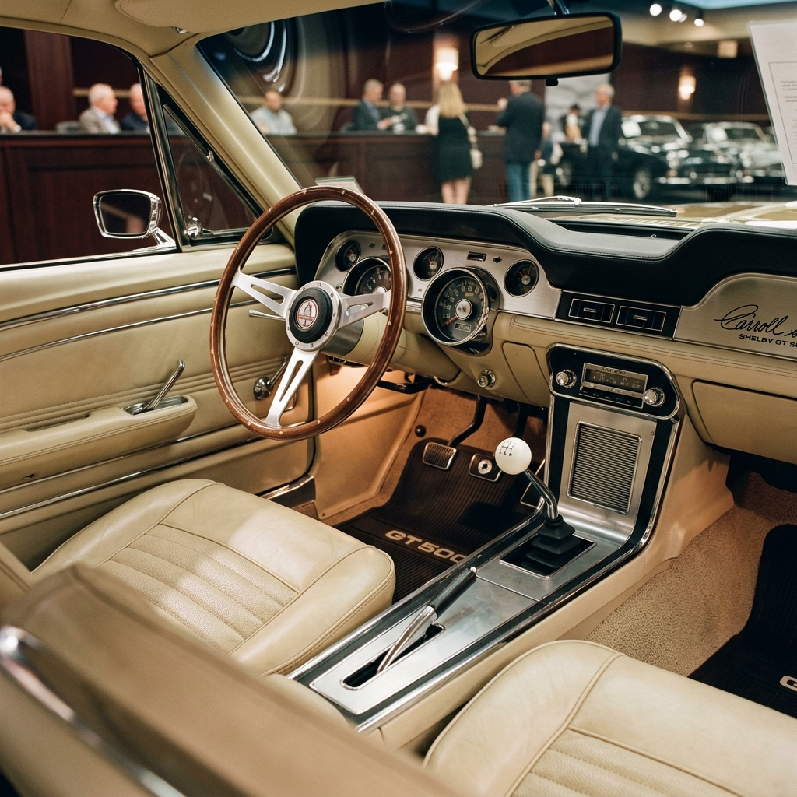

Qualified collectors may submit offers. Proof of capability required prior to private viewings in the United Kingdom.
Unlike standard production Shelby Mustangs, Chassis 0425 is one of only eleven Engineering Cars designated by Shelby American. These vehicles served as the physical laboratories for Carroll Shelby and his engineering staff at the Los Angeles Airport facility, testing structural limits, visual modifications, and powertrain options.
Configured in correct Dark Moss Green paint with a luxurious Parchment interior, this Shelby represents the pinnacle of executive style and motorsport performance. It is powered by a high-output 428 cubic inch V8 block connected to a heavy-duty 4-speed manual gearbox, retaining original early production fiberglass components.
From its initial delivery sheet on January 12, 1967, to its company car service and subsequent transition to private ownership, Chassis 0425 features a fully documented provenance. It is officially listed in the SAAC Registry, backed by deluxe production paperwork, and represents an investment-grade classic of historical magnitude.
"We didn't just build a GT500. We built a rolling laboratory to realize Carroll's ultimate vision of road-going dominance."
One of only eleven Shelby American factory engineering and development vehicles built, used to test design variations before mass production.
Extremely rare within the grand total of 2,048 Shelby GT500s built in 1967. A unique piece of the legendary muscle car era.
Retained by Shelby American's engineering team for active test and evaluation, serving as a blueprint for the commercial models.
An unbroken chain of ownership and history verified by registry files, production logs, and authentic paperwork archives.
Under the fiberglass bonnet lies the legendary 428 cubic inch Police Interceptor V8 engine, modified by Shelby American with dual Holley four-barrel carburetors, an aluminium intake manifold, and cast aluminium Cobra valve covers. Power is delivered to the rear wheels via a rugged four-speed manual transmission, resulting in a rated 355 BHP that dominated tracks and highways alike.
Chassis 0425 was used specifically to calibrate carburetor fuel ratios and testing structural heat distribution under high-load track conditions, making it an indispensable asset in developing the 1967 Shelby GT500's mechanical parameters.

Hand-laid, lightweight fiberglass bonnet and bootlid panels correct to the early development specifications, distinct from late-run factory steel components.
Features the highly sought-after early-production inboard high-beam headlights in the grille, before DOT regulations shifted them outboard.
Refinished in its authentic combination of Dark Moss Green exterior paint over Parchment knitted vinyl upholstery, matching the factory build record.
Fitted with authentic Shelby American dashboard gauges, wood-rimmed steering wheel, and a four-speed shifter from early 1967 production.
Completed at Shelby American's Los Angeles facility on January 12, 1967. Retained as an official company vehicle for test, development, and display.
Released from Shelby American company duties and sold to its first private collector in California, as detailed in original registration papers.
Subjected to a complete concourse-level restoration. Preserved all original engineering panels, fiberglass, and correct drivetrain configurations.
Acquired by an avid British collector, imported to the United Kingdom, and registered with the DVLA. Accompanied by historical UK MOT certificates.
Maintained inside a climate-controlled private collection. Routinely serviced by marque specialists to verify mechanical excellence and authenticity.
Official build sheet replica certifying the car's paint, options, and status as a Shelby American company vehicle.
Fully listed and recognized in the Shelby American Automobile Club Registry under its designated chassis number 0425.
Original internal dispatch records confirming its retention by Shelby Engineering in Los Angeles for test configurations.
A complete folder of UK registration documentation, tracking MOT tests, mileage records, and ownership history since 1990.
Chassis 0425 is accompanied by an extensive binder of historical documents, proving its role in Shelby American's development workflow. It includes original factory orders, build sheets, internal correspondence, and registry certification.
Request Document Access
Chassis 0425 is offered via private sales representation. We invite qualified collectors, representatives, and institutions to submit an enquiry or request a private viewing.